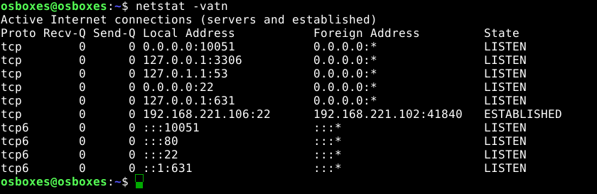
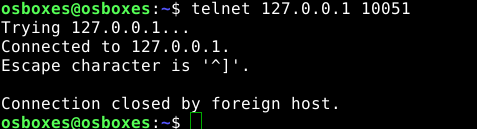
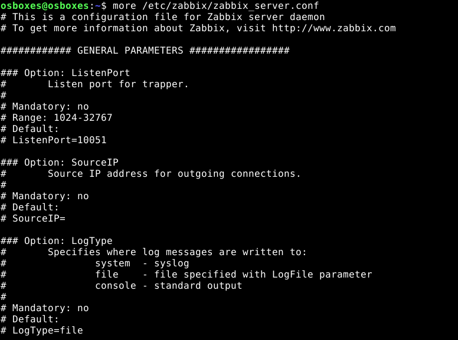
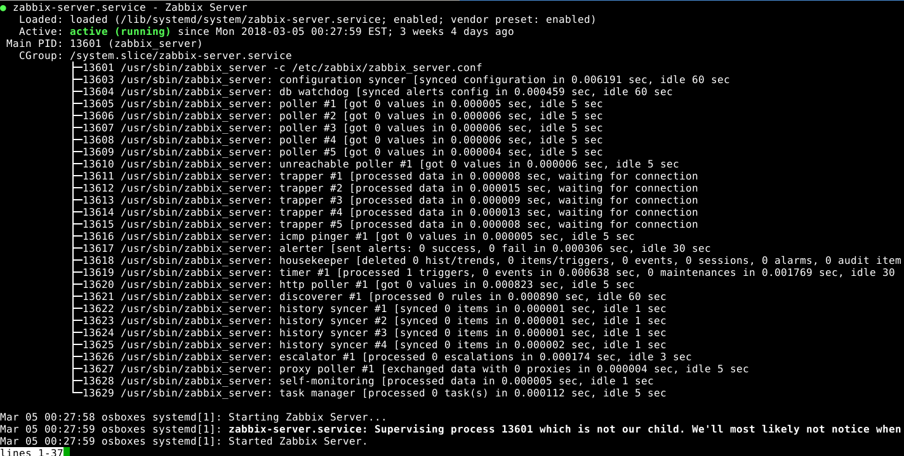
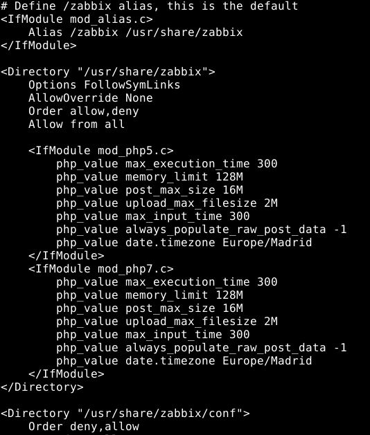

Puerto local del servidor Zabbix
El servidor Zabbix usa normalmente el puerto 10050/10051 por defecto para comunicarse con los agentes, en caso de problemas una de las pruebas más básicas es comprobar que el puerto esta abierto y accesible desde la red, a menudo las IPTABLES de Linux o el FW de MS Win lo bloquean.
Para detectar los puertos TCP abiertos ejecutamos nestat en el servidor (conexión SSH), entre los resultados debería figurar el puerto 10051:
$ netstat -vatn

Otra prueba un poco más intrusiva es conectarnos directamente al puerto usando Telnet, la conexión se interrumpe pero se observa que por un momento se ha abierto, si lo hacemos desde el propio servidor (lo bonito es hacerlo desde otra máquina para descartar también problemas de red):
$ telnet 127.0.0.1 10051

Demonio Zabbix
Logicamente para que el servidor funcione debe estar el demonio o servicio arrancado. El script de arranque del servicio se encuentra en la siguiente ruta: /etc/init.d/zabbix-server.
Podemos comprobar si el proceso zabbix_server está corriendo con el siguiente comando:
osboxes@osboxes:~$ ps -ax | grep "zabbix_server"
13601 ? S 0:00 /usr/sbin/zabbix_server -c /etc/zabbix/zabbix_server.conf
13603 ? S 0:19 /usr/sbin/zabbix_server: configuration syncer [synced configuration in 0.010576 sec, idle 60 sec]
13604 ? S 0:09 /usr/sbin/zabbix_server: db watchdog [synced alerts config in 0.000973 sec, idle 60 sec]
13605 ? S 0:13 /usr/sbin/zabbix_server: poller #1 [got 0 values in 0.000013 sec, idle 5 sec]
13606 ? S 0:13 /usr/sbin/zabbix_server: poller #2 [got 0 values in 0.000010 sec, idle 5 sec]
13607 ? S 0:13 /usr/sbin/zabbix_server: poller #3 [got 0 values in 0.000011 sec, idle 5 sec]
13608 ? S 0:13 /usr/sbin/zabbix_server: poller #4 [got 0 values in 0.000012 sec, idle 5 sec]
13609 ? S 0:12 /usr/sbin/zabbix_server: poller #5 [got 0 values in 0.000010 sec, idle 5 sec]
13610 ? S 0:15 /usr/sbin/zabbix_server: unreachable poller #1 [got 0 values in 0.000014 sec, idle 5 sec]
13611 ? S 0:00 /usr/sbin/zabbix_server: trapper #1 [processed data in 0.000008 sec, waiting for connection]
13612 ? S 0:00 /usr/sbin/zabbix_server: trapper #2 [processed data in 0.000015 sec, waiting for connection]
13613 ? S 0:00 /usr/sbin/zabbix_server: trapper #3 [processed data in 0.000009 sec, waiting for connection]
13614 ? S 0:00 /usr/sbin/zabbix_server: trapper #4 [processed data in 0.000009 sec, waiting for connection]
13615 ? S 0:00 /usr/sbin/zabbix_server: trapper #5 [processed data in 0.000020 sec, waiting for connection]
13616 ? S 0:10 /usr/sbin/zabbix_server: icmp pinger #1 [got 0 values in 0.000010 sec, idle 5 sec]
13617 ? S 0:08 /usr/sbin/zabbix_server: alerter [sent alerts: 0 success, 0 fail in 0.000221 sec, idle 30 sec]
13618 ? S 0:07 /usr/sbin/zabbix_server: housekeeper [deleted 0 hist/trends, 0 items/triggers, 0 events, 0 sessions, 0 alarms, 0 audit items in 0.032341 sec, idle for 1 hour(s)]
13619 ? S 0:11 /usr/sbin/zabbix_server: timer #1 [processed 1 triggers, 0 events in 0.000201 sec, 0 maintenances in 0.000686 sec, idle 30 sec]
13620 ? S 0:20 /usr/sbin/zabbix_server: http poller #1 [got 0 values in 0.000951 sec, idle 5 sec]
13621 ? S 0:08 /usr/sbin/zabbix_server: discoverer #1 [processed 0 rules in 0.001172 sec, idle 60 sec]
13622 ? S 0:22 /usr/sbin/zabbix_server: history syncer #1 [synced 0 items in 0.000004 sec, idle 1 sec]
13623 ? S 0:22 /usr/sbin/zabbix_server: history syncer #2 [synced 0 items in 0.000002 sec, idle 1 sec]
13624 ? S 0:22 /usr/sbin/zabbix_server: history syncer #3 [synced 0 items in 0.000002 sec, idle 1 sec]
13625 ? S 0:22 /usr/sbin/zabbix_server: history syncer #4 [synced 0 items in 0.000002 sec, idle 1 sec]
13626 ? S 0:30 /usr/sbin/zabbix_server: escalator #1 [processed 0 escalations in 0.000405 sec, idle 3 sec]
13627 ? S 0:11 /usr/sbin/zabbix_server: proxy poller #1 [exchanged data with 0 proxies in 0.000009 sec, idle 5 sec]
13628 ? S 0:22 /usr/sbin/zabbix_server: self-monitoring [processed data in 0.000011 sec, idle 1 sec]
13629 ? S 0:15 /usr/sbin/zabbix_server: task manager [processed 0 task(s) in 0.000139 sec, idle 5 sec]
20539 pts/17 S+ 0:00 grep --color=auto zabbix_server
La primera línea del resultado nos permite ver que el binario ejecutable zabbix_server carga la configuración de /etc/zabbix/zabbix_server.conf.

Otros procesos a tomar en cuenta son el servidor HTTP Apache (apache2) y la BD Mysql (mysqld).
El script zabbix-server acepta parámetros como [start|stop|refresh] para controlar el demonio.
El siguiente comando obtiene información del estado del servicio, por ejemplo su estado y desde cuando lleva arrancado:
$ service zabbix-server status

Configuración servidor Zabbix zabbix_server.conf
Parámetros:
ListenPort: Por defecto siempre será 10051 a no ser que lo cambiemos, normalmente no será necesario cambiarlo a no ser que algún otro servicio lo estuviera ocupando.SourceIP: Dirección de red del servidor.LogType: Sistema de logs (por defecto a fichero).LogFile: Fichero de log normalmente/var/log/zabbix/zabbix_server.log.DebugLevel: Normalmente con valor 3 para guardar logs de warning y error, con propósitos de debugear algún error podemos modificarlo a 4 o 5 para que muestre información detallada de la ejecución del servidor.PidFile: Archivo con el identificador del proceso del servidor, normalmente/var/run/zabbix/zabbix_server.pid, si queremos ver el PID del proceso principal podemos hacerlo conmore /var/run/zabbix/zabbix_server.pid.- A continuación especifica la conexión a la BD:
DBHost,DBName,DBSchema,DBUser(normalmente 'zabbix'),DBPassword(en mi caso 'osboxes.org'),DBSocket,DBPort(en MySQL por defecto suele ser 3306).
El fichero sigue con otros parámetros avanzados que ire comentando en cada caso. Por ejemplo la variable AlertScriptsPath será de gran interés ya que indica la ruta para definir scripts de alerta personalizados.
Logs del servidor Zabbix
osboxes@osboxes:~$ sudo more /var/log/zabbix/zabbix_server.log
Frontent PHP y Apache
Zabbix usa Apache como servidor HTTP para administrar el servidor Zabbix desde un interface Web desarrollado con PHP.
En la ruta /etc/zabbix/ se encuentran algunos archivos de interés.
/etc/zabbix/apache.conf: Fichero de configuración de la Web para Apache. Las primeras líneas indican donde están los archivos del sitio Web en /usr/share/zabbix.
